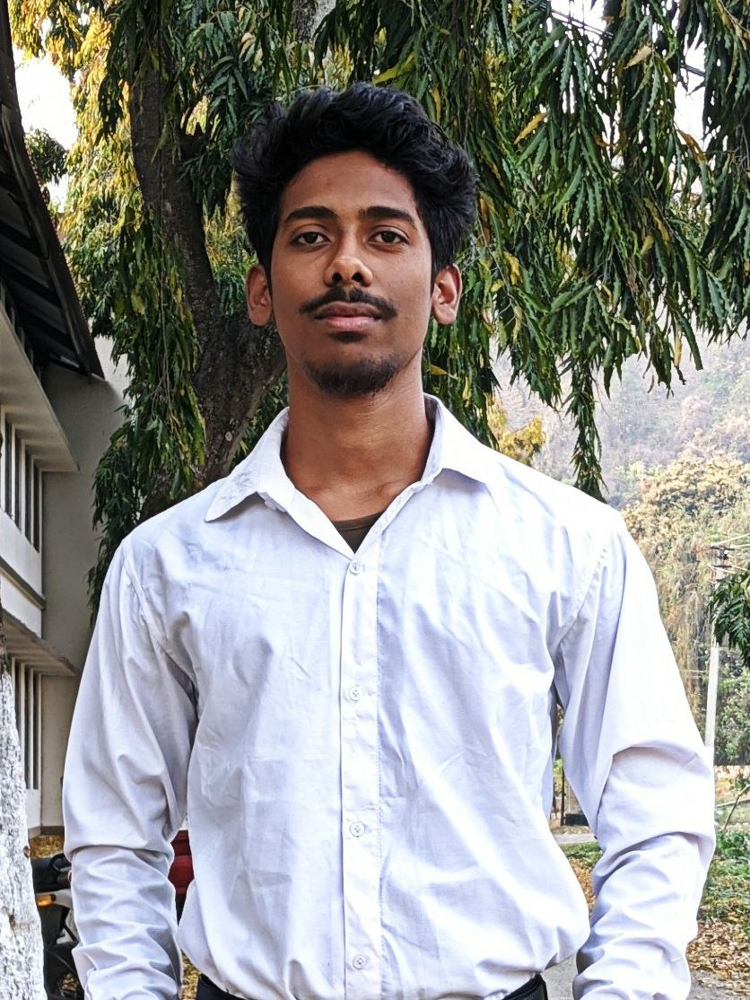

Akash Barman


Pre Final Year Engineering Undergrad üíª Assam Engineering College, Guwahati üéì
Made with ❤️ using HTML
|  |
Akash Barman
Pre Final Year Engineering Undergrad üíª |
A 21 y/o 3rd year ETE undergrad as well as an electronics
hobbyist. Versed in reviewing plans, writing
reports, researching solution and a good
communication skill.
I have a great passion to
acquire academic as well as industrial knowledge.
My area of interest include Analog components,
Digital Hardware design as well as
the Telecommunication sector.
|
|
⭐⭐⭐ |
|
|
⭐⭐⭐⭐ |
|
|
⭐⭐⭐⭐⭐ |
|
|
⭐⭐⭐⭐ |
|
|
⭐⭐⭐⭐⭐ |